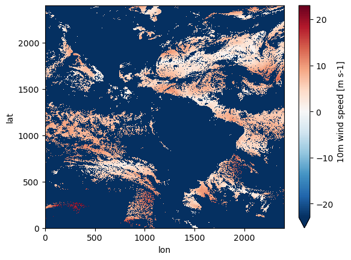
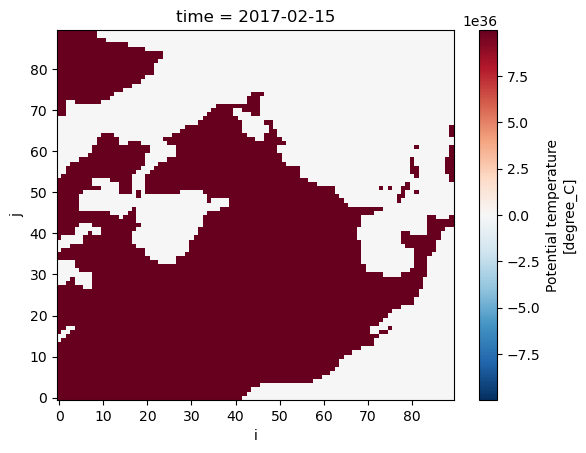

import xarray as xr
import pydap.clientAccessing data on NASA Earthdata servers via OPeNDAP protocol
📘 Learning Objectives
- Show how to work with NASA OPeNDAP for EULA and non-EULA data
Overview
NASA servers require authentication and some require End User Licence Agreement (EULA). They are so so hard to work with. None of the standard ways to create xarrays with OPeNDAP links work. The only way I have successfully authenticated is with pydap but it seems to garble the netcdf dim names.
Personally, I would try first to find the data on https://search.earthdata.nasa.gov/search and try to use earthaccess which would point you to cloud links. The earthaccess workflow for creating data cubes with xarray.open_mfdataset is quite a bit easier with fewer gotchas.
Prerequisites
I assume you have a .netrc file at ~ (home). ~/.netrc should look just like this with your username and password.
machine urs.earthdata.nasa.gov
login yourusername
password yourpasswordPackages
Using data on opendap.earthdata.nasa.gov
This works.
# doesn't point to specific file but we will spec protocol
url="https://opendap.earthdata.nasa.gov/collections/C2036877806-POCLOUD/granules/20220812010000-OSISAF-L3C_GHRSST-SSTsubskin-GOES16-ssteqc_goes16_20220812_010000-v02.0-fv01.0"
# this is another test url that works for this example
# url="https://opendap.earthdata.nasa.gov/hyrax/data/nc/fnoc1.nc"%%time
#from pydap.client import open_url
pydap_ds = pydap.client.open_url(url, protocol="dap4")CPU times: user 33 ms, sys: 631 µs, total: 33.6 ms
Wall time: 1.44 s%%time
# getting the data does work
test_ds = pydap_ds['lat'][:]CPU times: user 24.6 ms, sys: 6.92 ms, total: 31.5 ms
Wall time: 3.57 s%%time
# this works too but garbles my variables; also I have to do that dap4 replace
# too many gotchas with that dap4 replace
ds = xr.open_dataset(url.replace("https", "dap4", 1), engine="pydap", decode_cf=False)
dsCPU times: user 27.1 ms, sys: 8.29 ms, total: 35.3 ms
Wall time: 1.4 s<xarray.Dataset> Size: 144MB
Dimensions: (/time: 1, /lat: 2400, /lon: 2400)
Dimensions without coordinates: /time, /lat, /lon
Data variables: (12/19)
wind_speed (/time, /lat, /lon) int8 6MB ...
lon (/lon) float32 10kB ...
or_longitude (/time, /lat, /lon) int16 12MB ...
time (/time) int32 4B ...
sses_standard_deviation (/time, /lat, /lon) int8 6MB ...
sst_dtime (/time, /lat, /lon) int32 23MB ...
... ...
dt_analysis (/time, /lat, /lon) int8 6MB ...
satellite_zenith_angle (/time, /lat, /lon) int8 6MB ...
lat (/lat) float32 10kB ...
adi_dtime_from_sst (/time, /lat, /lon) int8 6MB ...
or_latitude (/time, /lat, /lon) int16 12MB ...
sses_bias (/time, /lat, /lon) int8 6MB ...
Attributes: (12/53)
Conventions: CF-1.4
title: Sea Surface Temperature
summary: The L3C product derived from GOES16/ABI brigh...
references: Geostationary Sea Surface Temperature Product...
institution: OSISAF
comment: None
... ...
netcdf_version_id: 4.6.3
build_dmrpp: 3.20.9-91
bes: 3.20.9-91
libdap: libdap-3.20.8-41
configuration: \n# TheBESKeys::get_as_config()\nAllowedHosts...
invocation: build_dmrpp -c /tmp/conf_GGue -f /tmp/tmph648...# Ug, I have to rename variables
# Ug the dims do not use lat lon values
ds = ds.rename({"/time": "time", "/lat": "lat", "/lon": "lon"})
ds["wind_speed"].plot();/srv/conda/envs/notebook/lib/python3.12/site-packages/xarray/plot/utils.py:260: RuntimeWarning: overflow encountered in scalar absolute
vlim = max(abs(vmin - center), abs(vmax - center))
%%time
# This is doing the same thing as engine="pydap" I think but I don't have to know the dap4 replacement
# ds created is the same though
store = xr.backends.PydapDataStore(pydap_ds)
ds = xr.open_dataset(store, decode_cf=False)CPU times: user 1.54 ms, sys: 0 ns, total: 1.54 ms
Wall time: 1.55 msData with a EULA
This fails with .netrc when there is a EULA. I have accepted the EULA. Works if I explicitly set my username and password. If I don’t, and let pydap use .netrc automatically, I get a redirect error.
Prerequisites
Make sure you have the GESDISC EULA accepted.
- Log into https://urs.earthdata.nasa.gov
- Then go here https://urs.earthdata.nasa.gov/profile
- Then click EULAs
- Go to unaccepted EULAs and make sure that GESDISC is accepted
# the GESDISC data requires a EULA
eula_url = 'https://goldsmr4.gesdisc.eosdis.nasa.gov/opendap/MERRA2/M2T1NXSLV.5.12.4/2016/06/MERRA2_400.tavg1_2d_slv_Nx.20160601.nc4'Get password from netrc file
import netrc
# Get credentials from .netrc
auth_host = "urs.earthdata.nasa.gov"
try:
credentials = netrc.netrc().authenticators(auth_host)
if credentials:
username, _, password = credentials
else:
raise ValueError("No credentials found in .netrc!")
except FileNotFoundError:
raise FileNotFoundError("Could not find ~/.netrc. Ensure it exists and is configured correctly.")Now I set up a session with that username and password.
%%time
# 4 seconds!
import pydap
from pydap.client import open_url
from pydap.cas.urs import setup_session
session = setup_session(username, password, check_url=eula_url)
pydap_ds = open_url(eula_url, session=session, protocol="dap4")CPU times: user 72.4 ms, sys: 3.19 ms, total: 75.6 ms
Wall time: 4.43 s# but at least is works when we try to get data
test_ds = pydap_ds['lat'][:]%%time
# this works but is a lot of syntax to remember
ds = xr.open_dataset(eula_url.replace("https", "dap4", 1), engine="pydap", decode_cf=False, session=session)CPU times: user 43.5 ms, sys: 389 µs, total: 43.8 ms
Wall time: 997 ms# yeah! I can get the data
ds = ds.rename({"/time": "time", "/lat": "lat", "/lon": "lon"})
ds["T2M"].isel(time=1).plot();
%%time
import xarray as xr
# This works too but is so much slower
store = xr.backends.PydapDataStore(pydap_ds)
ds = xr.open_dataset(store)CPU times: user 40.7 ms, sys: 4.32 ms, total: 45 ms
Wall time: 1.76 s# I have to rename variables
ds = ds.rename({"/time": "time", "/lat": "lat", "/lon": "lon"})
ds["T2M"].isel(time=1).plot();
Trying to have pydap auto use my .netrc file
This fails when I try to get the data. I get redirect errors.
%%time
# this part works
from pydap.client import open_url
import xarray as xr
pydap_ds = open_url(eula_url, protocol="dap4")CPU times: user 38 ms, sys: 3.67 ms, total: 41.6 ms
Wall time: 1.04 sBut if I try to get the data, I get redirect errors
test_ds = pydap_ds['lat'][:]This gives this error
“This is redirect error. These should not usually raise an error in pydap beacuse redirects are handled implicitly. If it failed it is likely due to a circular redirect.”
This then also gives the same error.
store = xr.backends.PydapDataStore(pydap_ds)
ds = xr.open_dataset(store)Creating data cubes
Our goal is not individual files rather data cubes from multiple files. We will use xarray.open_mfdataset but we need to make some tweaks.
- We need to use
dap4instead ofhttps. I don’t know what to do if that doesn’t work. - We need to concatenate using
\timenottimesince the dim name has that slash in it.
Example 1 Non-EULA data
# doesn't point to specific file but we will spec protocol
url1="dap4://opendap.earthdata.nasa.gov/collections/C2036877806-POCLOUD/granules/20220812010000-OSISAF-L3C_GHRSST-SSTsubskin-GOES16-ssteqc_goes16_20220812_010000-v02.0-fv01.0"
url2="dap4://opendap.earthdata.nasa.gov/collections/C2036877806-POCLOUD/granules/20220813010000-OSISAF-L3C_GHRSST-SSTsubskin-GOES16-ssteqc_goes16_20220813_010000-v02.0-fv01.0"
urls = [url1, url2]
urls['dap4://opendap.earthdata.nasa.gov/collections/C2036877806-POCLOUD/granules/20220812010000-OSISAF-L3C_GHRSST-SSTsubskin-GOES16-ssteqc_goes16_20220812_010000-v02.0-fv01.0',
'dap4://opendap.earthdata.nasa.gov/collections/C2036877806-POCLOUD/granules/20220813010000-OSISAF-L3C_GHRSST-SSTsubskin-GOES16-ssteqc_goes16_20220813_010000-v02.0-fv01.0']ds = xr.open_mfdataset(urls, engine="pydap", combine="nested", concat_dim="/time", decode_cf=False)
ds<xarray.Dataset> Size: 288MB
Dimensions: (/time: 2, /lat: 2400, /lon: 2400)
Dimensions without coordinates: /time, /lat, /lon
Data variables: (12/19)
wind_speed (/time, /lat, /lon) int8 12MB dask.array<chunksize=(1, 2400, 2400), meta=np.ndarray>
lon (/time, /lon) float32 19kB dask.array<chunksize=(1, 2400), meta=np.ndarray>
or_longitude (/time, /lat, /lon) int16 23MB dask.array<chunksize=(1, 2400, 2400), meta=np.ndarray>
time (/time) int32 8B dask.array<chunksize=(1,), meta=np.ndarray>
sses_standard_deviation (/time, /lat, /lon) int8 12MB dask.array<chunksize=(1, 2400, 2400), meta=np.ndarray>
sst_dtime (/time, /lat, /lon) int32 46MB dask.array<chunksize=(1, 2400, 2400), meta=np.ndarray>
... ...
dt_analysis (/time, /lat, /lon) int8 12MB dask.array<chunksize=(1, 2400, 2400), meta=np.ndarray>
satellite_zenith_angle (/time, /lat, /lon) int8 12MB dask.array<chunksize=(1, 2400, 2400), meta=np.ndarray>
lat (/time, /lat) float32 19kB dask.array<chunksize=(1, 2400), meta=np.ndarray>
adi_dtime_from_sst (/time, /lat, /lon) int8 12MB dask.array<chunksize=(1, 2400, 2400), meta=np.ndarray>
or_latitude (/time, /lat, /lon) int16 23MB dask.array<chunksize=(1, 2400, 2400), meta=np.ndarray>
sses_bias (/time, /lat, /lon) int8 12MB dask.array<chunksize=(1, 2400, 2400), meta=np.ndarray>
Attributes: (12/53)
Conventions: CF-1.4
title: Sea Surface Temperature
summary: The L3C product derived from GOES16/ABI brigh...
references: Geostationary Sea Surface Temperature Product...
institution: OSISAF
comment: None
... ...
netcdf_version_id: 4.6.3
build_dmrpp: 3.20.9-91
bes: 3.20.9-91
libdap: libdap-3.20.8-41
configuration: \n# TheBESKeys::get_as_config()\nAllowedHosts...
invocation: build_dmrpp -c /tmp/conf_GGue -f /tmp/tmph648...Let’s do some slicing and see how fast we can get the data.
ds = ds.rename({"/time": "time", "/lat": "lat", "/lon": "lon"})%%time
test = ds["wind_speed"].isel(time=1).load()CPU times: user 51.7 ms, sys: 16.8 ms, total: 68.5 ms
Wall time: 3.87 sExample 2 EULA data
We have to do a bit of set-up so that things don’t go south with re-directs.
import netrc
# Get credentials from .netrc
auth_host = "urs.earthdata.nasa.gov"
try:
credentials = netrc.netrc().authenticators(auth_host)
if credentials:
username, _, password = credentials
else:
raise ValueError("No credentials found in .netrc!")
except FileNotFoundError:
raise FileNotFoundError("Could not find ~/.netrc. Ensure it exists and is configured correctly.")import pydap
from pydap.client import open_url
from pydap.cas.urs import setup_session
session = setup_session(username, password)eula_url1 = 'dap4://goldsmr4.gesdisc.eosdis.nasa.gov/opendap/MERRA2/M2T1NXSLV.5.12.4/2016/06/MERRA2_400.tavg1_2d_slv_Nx.20160601.nc4'
eula_url2 = 'dap4://goldsmr4.gesdisc.eosdis.nasa.gov/opendap/MERRA2/M2T1NXSLV.5.12.4/2016/06/MERRA2_400.tavg1_2d_slv_Nx.20160602.nc4'
eula_urls = [eula_url1, eula_url2]%%time
# very fast and this is 1Tb of data
ds = xr.open_mfdataset(eula_urls, engine="pydap", combine="nested", concat_dim="/time", decode_cf=False, session=session)
dsCPU times: user 137 ms, sys: 11.7 ms, total: 149 ms
Wall time: 2.25 s<xarray.Dataset> Size: 2GB
Dimensions: (/time: 48, /lat: 361, /lon: 576)
Dimensions without coordinates: /time, /lat, /lon
Data variables: (12/50)
U2M (/time, /lat, /lon) float32 40MB dask.array<chunksize=(24, 361, 576), meta=np.ndarray>
V250 (/time, /lat, /lon) float32 40MB dask.array<chunksize=(24, 361, 576), meta=np.ndarray>
TROPT (/time, /lat, /lon) float32 40MB dask.array<chunksize=(24, 361, 576), meta=np.ndarray>
TROPPB (/time, /lat, /lon) float32 40MB dask.array<chunksize=(24, 361, 576), meta=np.ndarray>
T2M (/time, /lat, /lon) float32 40MB dask.array<chunksize=(24, 361, 576), meta=np.ndarray>
TQL (/time, /lat, /lon) float32 40MB dask.array<chunksize=(24, 361, 576), meta=np.ndarray>
... ...
T2MWET (/time, /lat, /lon) float32 40MB dask.array<chunksize=(24, 361, 576), meta=np.ndarray>
U500 (/time, /lat, /lon) float32 40MB dask.array<chunksize=(24, 361, 576), meta=np.ndarray>
QV10M (/time, /lat, /lon) float32 40MB dask.array<chunksize=(24, 361, 576), meta=np.ndarray>
lat (/time, /lat) float64 139kB dask.array<chunksize=(24, 361), meta=np.ndarray>
lon (/time, /lon) float64 221kB dask.array<chunksize=(24, 576), meta=np.ndarray>
time (/time) int32 192B dask.array<chunksize=(24,), meta=np.ndarray>
Attributes: (12/31)
History: Original file generated: Tue Jun 14 18...
Comment: GMAO filename: d5124_m2_jan10.tavg1_2d...
Filename: MERRA2_400.tavg1_2d_slv_Nx.20160601.nc4
Conventions: CF-1
Institution: NASA Global Modeling and Assimilation ...
References: http://gmao.gsfc.nasa.gov
... ...
identifier_product_doi: 10.5067/VJAFPLI1CSIV
RangeBeginningDate: 2016-06-01
RangeBeginningTime: 00:00:00.000000
RangeEndingDate: 2016-06-01
RangeEndingTime: 23:59:59.000000
Unlimited_Dimension: timeprint(f"Dataset size: {ds.nbytes/1e6:.2f} MB")Dataset size: 1876.77 MBBUT we have that redirect error again if we try to get some data from our data cube. With open_dataset, it recognized the session (with our password) and dealt with the redirects, but with open_mfdataset is is not working.
ds = ds.rename({"/time": "time", "/lat": "lat", "/lon": "lon"})
ds["T2M"].isel(time=1).load()gives the error again.
“This is redirect error. These should not usually raise an error in pydap beacuse redirects are handled implicitly. If it failed it is likely due to a circular redirect.”
Example 3 from PyDap documentation
In this example, constraint expression is used just to get certain variables. See full notebook here.
baseURL = 'dap4://opendap.earthdata.nasa.gov/providers/POCLOUD/collections/'
Temp_Salt = "ECCO%20Ocean%20Temperature%20and%20Salinity%20-%20Monthly%20Mean%20llc90%20Grid%20(Version%204%20Release%204)/granules/OCEAN_TEMPERATURE_SALINITY_mon_mean_"
year = '2017-'
month = '01'
end_ = '_ECCO_V4r4_native_llc0090'
CE = '?dap4.ce=/THETA;/SALT;/tile;/j;/k;/i;/time'
Temp_2017 = [baseURL + Temp_Salt + year + f'{i:02}' + end_ + CE for i in range(1, 4)]
Temp_2017['dap4://opendap.earthdata.nasa.gov/providers/POCLOUD/collections/ECCO%20Ocean%20Temperature%20and%20Salinity%20-%20Monthly%20Mean%20llc90%20Grid%20(Version%204%20Release%204)/granules/OCEAN_TEMPERATURE_SALINITY_mon_mean_2017-01_ECCO_V4r4_native_llc0090?dap4.ce=/THETA;/SALT;/tile;/j;/k;/i;/time',
'dap4://opendap.earthdata.nasa.gov/providers/POCLOUD/collections/ECCO%20Ocean%20Temperature%20and%20Salinity%20-%20Monthly%20Mean%20llc90%20Grid%20(Version%204%20Release%204)/granules/OCEAN_TEMPERATURE_SALINITY_mon_mean_2017-02_ECCO_V4r4_native_llc0090?dap4.ce=/THETA;/SALT;/tile;/j;/k;/i;/time',
'dap4://opendap.earthdata.nasa.gov/providers/POCLOUD/collections/ECCO%20Ocean%20Temperature%20and%20Salinity%20-%20Monthly%20Mean%20llc90%20Grid%20(Version%204%20Release%204)/granules/OCEAN_TEMPERATURE_SALINITY_mon_mean_2017-03_ECCO_V4r4_native_llc0090?dap4.ce=/THETA;/SALT;/tile;/j;/k;/i;/time']Create data cube with open_mfdataset but not concat dim is /time not time. This takes a really long time, but if we didn’t do the constraint expression part, it would take much longer. So it is good to do that step.
%%time
# 13 seconds to assemble the data cube for a 126Mb dataset...slow
theta_salt_ds = xr.open_mfdataset(
Temp_2017,
engine='pydap',
parallel=True,
combine='nested',
concat_dim='/time',
)
theta_salt_dsCPU times: user 610 ms, sys: 24.1 ms, total: 634 ms
Wall time: 9.17 s<xarray.Dataset> Size: 126MB
Dimensions: (/time: 3, /k: 50, /tile: 13, /j: 90, /i: 90)
Coordinates:
time (/time) datetime64[ns] 24B dask.array<chunksize=(1,), meta=np.ndarray>
Dimensions without coordinates: /time, /k, /tile, /j, /i
Data variables:
SALT (/time, /k, /tile, /j, /i) float32 63MB dask.array<chunksize=(1, 50, 13, 90, 90), meta=np.ndarray>
THETA (/time, /k, /tile, /j, /i) float32 63MB dask.array<chunksize=(1, 50, 13, 90, 90), meta=np.ndarray>
i (/time, /i) int32 1kB dask.array<chunksize=(1, 90), meta=np.ndarray>
j (/time, /j) int32 1kB dask.array<chunksize=(1, 90), meta=np.ndarray>
k (/time, /k) int32 600B dask.array<chunksize=(1, 50), meta=np.ndarray>
tile (/time, /tile) int32 156B dask.array<chunksize=(1, 13), meta=np.ndarray>
Attributes: (12/62)
acknowledgement: This research was carried out by the Jet...
author: Ian Fenty and Ou Wang
cdm_data_type: Grid
comment: Fields provided on the curvilinear lat-l...
Conventions: CF-1.8, ACDD-1.3
coordinates_comment: Note: the global 'coordinates' attribute...
... ...
time_coverage_duration: P1M
time_coverage_end: 2017-02-01T00:00:00
time_coverage_resolution: P1M
time_coverage_start: 2017-01-01T00:00:00
title: ECCO Ocean Temperature and Salinity - Mo...
uuid: f5b7028c-4181-11eb-b7e6-0cc47a3f47b1print(f"Dataset size: {theta_salt_ds.nbytes/1e6:.2f} MB")Dataset size: 126.36 MBtheta_salt_ds = theta_salt_ds.rename({"/time": "time", "/j": "j", "/i": "i", "/tile": "tile", "/k": "k"})/tmp/ipykernel_1511/704975482.py:1: UserWarning: rename '/time' to 'time' does not create an index anymore. Try using swap_dims instead or use set_index after rename to create an indexed coordinate.
theta_salt_ds = theta_salt_ds.rename({"/time": "time", "/j": "j", "/i": "i", "/tile": "tile", "/k": "k"})theta_salt_ds["THETA"].isel(time=1, tile=10, k=1).plot()
Conclusion
Working with NASA OPeNDAP servers is hard and if there is a EULA for that data source, it is even harder.
References
- https://pydap.github.io/pydap/intro.html
- https://opendap.github.io/documentation/tutorials/ClientAuthentication.html#_pydap
- https://github.com/OPENDAP/NASA-tutorials/tree/main